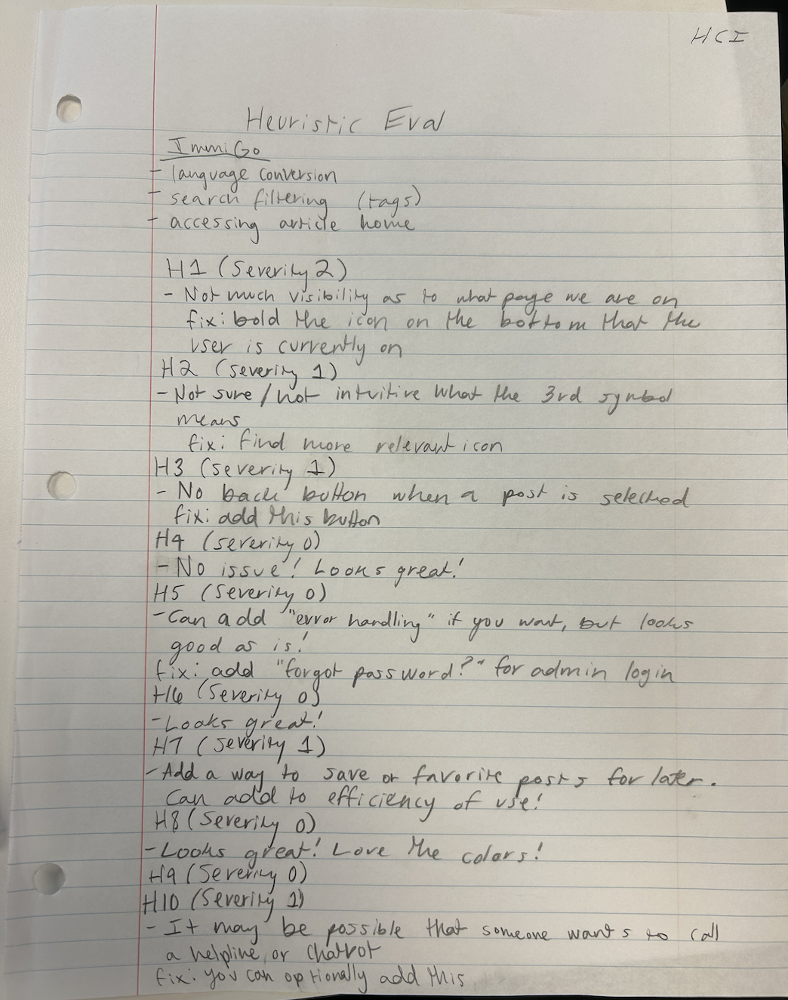

Overview
We conducted a heuristic evaluation based on Nielsen's 10 usability heuristics. Each evaluator completed three core tasks: language conversion, search/filtering by visa type, and accessing articles from the home feed. Below are our notes and findings, along with severity ratings and suggested fixes.
Image References

Evaluator 1 Notes
Tasks
- Language conversion
- Search filtering (tags)
- Accessing article home
Heuristics & Findings
- H1 – Severity 2: Not much visibility as to what page we are on. Bold the icon on the bottom that the user is currently on.
- H2 – Severity 1: Unclear what the 3rd symbol means.
- H3 – Severity 1: No back button when a post is selected.
- H4 – Severity 0: No issue
- H5 – Severity 0: Can add error handling if you want, but looks good. Fix: Add “Forgot password?” for admin login.
- H6 – Severity 0: Looks great!
- H7 – Severity 1: Add a way to save or favorite posts. Improves efficiency.
- H8 – Severity 0: Looks great! Love the colors!
- H9 – Severity 0
- H10 – Severity 1: Users may want to contact a helpline or chatbot.
Evaluator 2 Notes
Tasks
- Language conversion
- Search/filter by visa type
- Access articles in home feed
Heuristics & Findings
- H2 – Severity 1: Unclear what the 3rd icon is.
- H1 – Severity 1: I feel like I’m informed about being logged in. Possibly add sort-by-date feature.
- H3 – Severity 1–2: Bottom bar feels limiting. Add back button on all pages.
- H4 – Severity 0: Very consistent styling.
- H6 – Severity 0: Minimal hidden affordances.
- H5 – Severity 1–2: Add “Forgot password?” option.
- H7 – Severity 1: Add a way to save articles for later.
- H8 – Severity 1: Minimal design appreciated. Blue is a bit bright.
- H9 – Severity 0: Simple enough that I don’t see errors.
- H10– Consider chat support to explain legislation